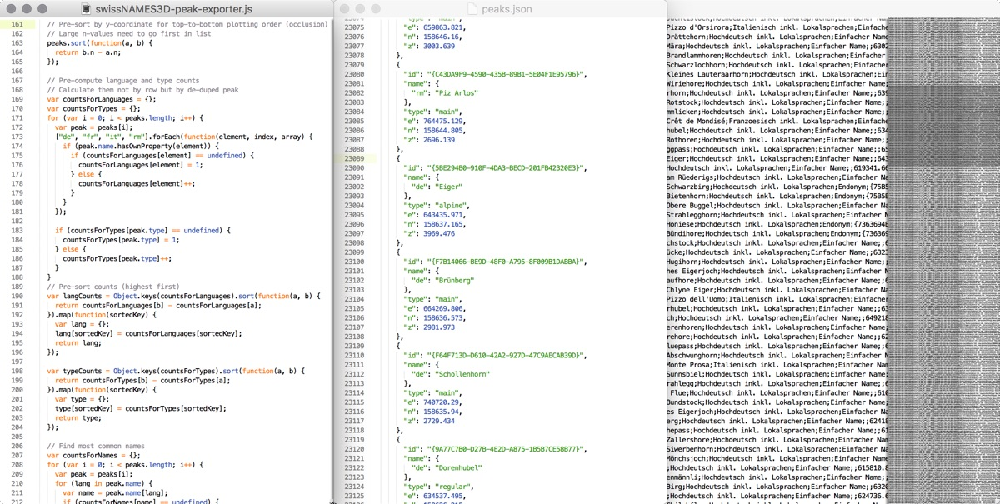
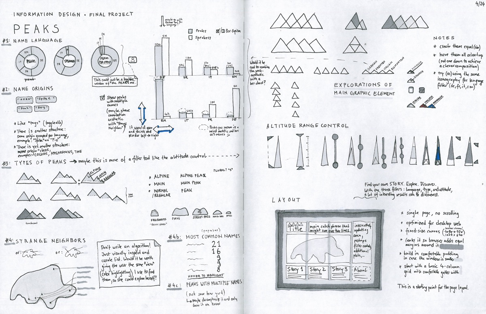
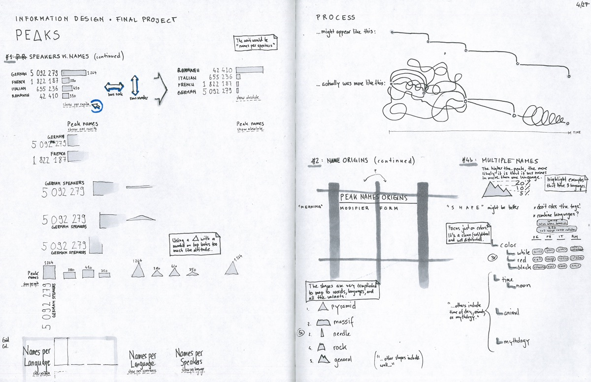
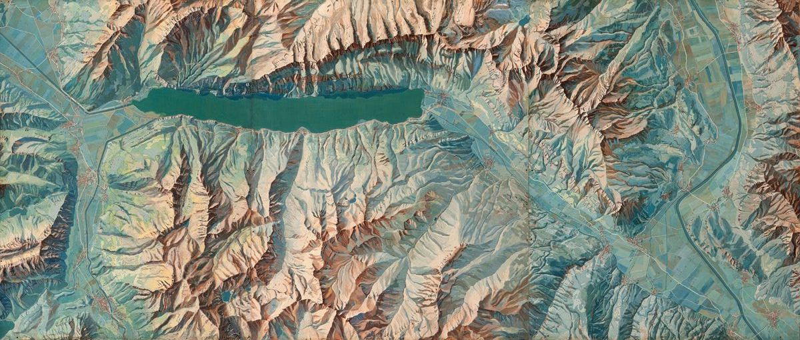

Peaks is a visualization that explores the origin of mountain names in Switzerland. Visitors can explore the map and interact with the data through the filters on the right. At the bottom, there are three guided narratives. The piece is best experienced in a modern desktop browser (screenshot). If it doesn’t display properly, here’s a 2min walkthrough.
The underlying data is an amazing set of numerous georeferenced names of built infrastructure and topographical features. To make sense of this big dataset (a 50MB plain text file with 224,369 lines), I had to build custom Node.js tools to filter, analyze, and convert the data into more understandable and manageable forms.
During this data exploration phase, I came across countless threads of stories that could potentially be told, and eventually settled on the rich intersection of mountains and languages.
To get first basic visual representations, I rendered the data with p5.js, the emerging web version of the Processing programming language. This might take a bit longer than using standard tools like Excel, but moving into the medium the final piece will be in as quick as possible made certain discoveries possible that otherwise would be hard to find. Sketching ideas on paper and rapidly iterating on them in code with the real data is my favorite part of the process.
While building these visual tools to experience the data, it became clear that I wanted to provide them to visitors for self-guided exploration. In addition, I discovered interesting sub-stories that I wanted to pull out as narratives and make them accessible to an audience that isn’t familiar with the data.
The first narrative explores the impact language has on naming (e.g. Romansh' names have much wider influence than their language region), the second shows common names (similar to almost every U.S. state having a Springfield), and the third one highlights three colors as common origins for names. Each of these narratives is also interactive and tied to the central map.
The step from an interesting data visualization to meaningful information design often requires enriching the core dataset with additional datasets (e.g. census data) to put it in context.
All user interface elements started out as standard web-components and then turned into custom forms to work in harmony with the rest. The mountain-themed language checkboxes, for example, double as map color key and language toggles. I did all interface and layout design iterations in Sketch before coding them up.
To give a sense of orientation, I rendered a matching and subtle geographic outline as base map. To extract that data from a geographic database, I used GDAL and transformed it with TopoJSON.
I grew up appreciating the Swiss School Atlas with its aesthetic representations by geographer Eduard Imhof. He’s the inventor of the Swiss style shaded relief map, and his 1938 map painting “Karte der Gegend um den Walensee” served as visual inspiration.
I turned the color palate into four distinct single-hue sequences that can also depict altitude (from darker and more saturated colors to lighter tints for snowy high-altitude peaks).
It would be interesting to explore other representations of the names than a map such as putting them side by side ordered by altitude or non-geographically clustered by language. I would also be interested in designing a non-interactive print version. Another idea was to move from points to line segments and do Streams – an interesting dataset I put aside to focus on Peaks.
Peaks was a project I did in the final few weeks of a class I took at MIT called Information Design – Exploration, Navigation, and Understanding. The class was co-taught by Ben Fry, co-inventor of the creative coding environment Processing. In his Eyeo 2016 talk Ben mentions Peaks (demo at 9min 11s), and gives more background on the class, tools, and the trade of information design.
If you’d like to get or stay in touch, I send out an occasional email update for the curious on what’s new in life and what excites me.
Made with ♥︎ by Raphael Schaad at MIT in May 2016